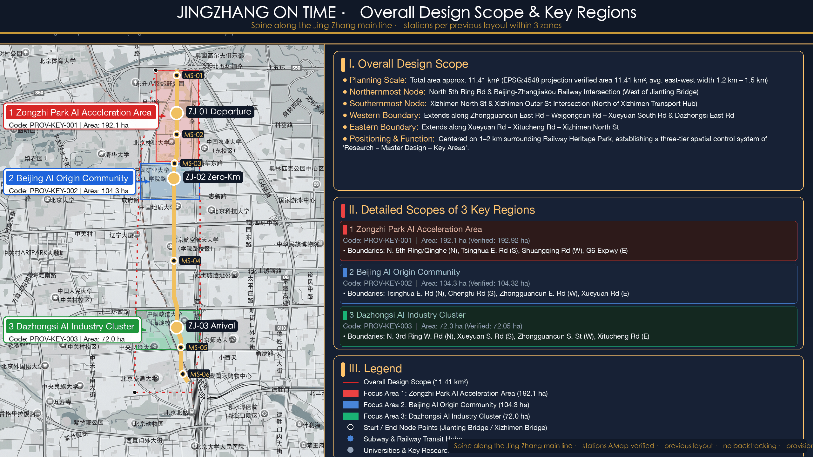

JINGZHANG ON TIME
Key Indicators
总览地图 / Overview Map

Overall design 11.41 km² (EPSG:4548 provisional): heritage park as the diagram main line; three stations north to south — ZJ-01 Departure Yard (Zhongzhi 192.1 ha)
Intermediate Stops MS-01~06
Light stops every ~1.3 km: timetable point + signal post + traveler rest + staffed window — high-frequency daily stops / transfer points / window maintenance points.
Three-Signal Display
Completed on schedule without human takeover; status public
Delay over threshold: notice + compensation + human takeover
Back to no-AI baseline; public space and staffed services unaffected
三层范围 / Three-Level Scope
| Tier | Area | Scope |
|---|---|---|
| Regional study | 43.6 km² | Southern Haidian innovation corridor (5th Ring N / G6 E / Xizhimen Outer St S / Wanquanhe Rd W) |
| Overall design | 11.41 km² | 1–2 km urban area around the heritage park; land/blue-green/mobility/form framework |
| Key areas | 368.4 ha | Zhongzhi 192.1 + Origin 104.3 + Dazhongsi 72.0; three detailed districts |
重点区域 / Key Areas: Three Stations
ZJ-01 Departure Yard (Zhongzhi 192.1 ha)
Intermediate Stops MS-01~06
Light stops every ~1.3 km: timetable point + signal post + traveler rest + staffed window — high-frequency daily stops / transfer points / window maintenance points.
Intermediate Stops MS-01~06
Light stops every ~1.3 km: timetable point + signal post + traveler rest + staffed window — high-frequency daily stops / transfer points / window maintenance points.
Marshalling: paired testing (AI on/off) and baseline verification earn the punctuality seal before entering the diagram. Anchors: T-01 + SP-01/02.
ZJ-02 Zero-Kilometre (Origin 104.3 ha)
Qinghuayuan adaptive reuse = Timetable Hall; first-service pilot cabin (T-07) anchors the full 90-day loop. Anchor: T-04 transfer desk.
ZJ-03 Arrival-Transfer (Dazhongsi 72.0 ha)
Arrival plaza kit (signal post + punctuality board + compensation kiosk); Diagram Yearbook Hall (T-08). Anchor: T-02 board.
用地分区 / Land Use & Renewal
| Use | Area | Share | Renewal |
|---|---|---|---|
| LU-001 R&D | 311.9 ha | 27.3% | New reserve (signal posts, timetable boards, TOD links) |
| LU-002 Green | 270.8 ha | 23.7% | Retain & restore (heritage spine, waterfront green) |
| LU-003 Industry | 309.4 ha | 27.1% | Retrofit (Qinghe riverside industrial stock) |
| LU-004 Housing | 249.2 ha | 21.8% | Retain & restore; Dazhongsi demolition discussion (pending survey) |
交通慢行与蓝绿公共空间 / Mobility & Blue-Green
交通慢行 / Mobility
TOD stitching at three stations; five-band spine (timetable—accessible—slow—staffed—signal); 15 gap-stitching units; transfer protocol with human-signed receipts.
蓝绿公共空间 / Blue-Green
One axis, two rivers, multiple corridors; green patches 10 units 3.55 km²; 9.5 km wind corridor (est. 0.8–1.5°C, synthetic); Qinghe low-carbon waterfront sensing.
建筑 / Buildings
Building census unpublished: buildings.geojson keeps status=unknown; renewal draft confidence=low; whole-package recalculation on official data.
AI 场景 / Scenario Cards (8)
| ID | Scenario | Space | Tier | Mechanism |
|---|---|---|---|---|
| T-01 | Diagram Registration Desk | all stations | L1 | No timetable, no departure — unregistered services do not run |
| T-02 | Punctuality Board | station halls | L1 | Monthly punctuality; amber + notice on delay |
| T-03 | Window Plaza | spine | L1 | Weekly window: AI off line-wide, public space returns to no-AI state |
| T-04 | Transfer Desk | joints | L2 | Handovers follow transfer times; human-signed receipts |
| T-05 | Compensation Kiosk | stations | L1 | Delay over threshold opens human/free-equivalent/appeal — a delay always has an account |
| T-06 | Signal Post | spine+stations | L1 | Green/amber/red public status code |
| T-07 | First-Service Pilot Cabin | Origin 100m window | L2 | Full 90-day first-service loop |
| T-08 | Diagram Yearbook Hall | Dazhongsi | L1 | Annual review public; failures and delays archived — the diagram does not lie |
治理与实施 / Governance & Implementation
核心指标与任务覆盖 / KPIs & Coverage
Six diagram KPIs sourced from the diagram log; taskbook coverage 9/9 (standard_matrix).
自检状态 / Self-Check
self_check ok=true: all four official gates passed (0 errors); diagram checker 10 fixtures (3 accepted, 7 rejected); manifest 39 files with sha256.
来源与假设 / Sources & Assumptions
sources.json four-level register (21 items); statutory texts quoted verbatim. Boundaries provisional; census/controls/network unpublished (unknown stays unknown); KPIs pending pilot.
更新项目 / Implementation
90-day first service; six renewal projects JZ-01~06 in Proof-Mile loop; five-party operating community; five-fund firewall.